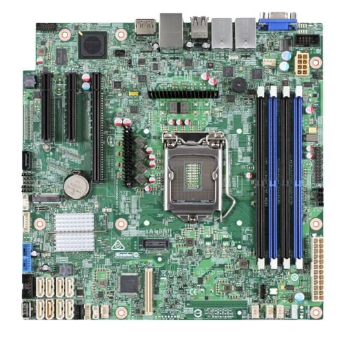

1. Motherboard
The motherboard is the main internal hardware component of the system unit.
This board is called the "motherboard" because it has all the connectors that connect to the other hardware
components of the computer system. This means that all input and output (I/O) devices have their connectors
on the motherboard.

Since the CPU (especially high-speed CPU) generates a lot of heat during operation, it has a socket for fixing
the central processing unit (CPU) or the processor with a heat sink and fan. It also has a main memory slot,
a video or graphics card slot, and a backup battery.
2. CPU or Processor
The CPU is the hardware component responsible for all operations performed in the computer system,
which is why most computer users call it the brain of the computer, which is fixed on the
motherboard through a slot.

The CPU or processor has two main components, namely the control unit (CU) and the arithmetic logic
unit (ALU). CU fetches instructions from memory and executes them to control input and output
devices, while ALU performs arithmetic and logic processing. The speed of the processor is
measured in megahertz (MHz) or gigahertz (GHz).
3. RAM(Random access Memory)
RAM is the main memory of a computer system, and its main function is to temporarily store data.
Based on the fact that the data is accessed randomly (in no particular order), it allows the CPU to easily
access the data. It can also speed up the operation of the computer because it allows random access to data.

The larger the RAM, the faster the CPU can access data. RAM is volatile, which means it works or stores data
while the computer is still running, and loses all data when the computer is shut down. RAM, CPU, and hard disk
are the main sources of computer speed. A computer can use multiple RAMs, depending on the user's preference,
but limited by the number of memory slots on the motherboard.
4. Hard Disk
The main storage device of a computer system is a hard disk or hard disk drive. Unlike RAM, which temporarily stores
data, the main function of a hard drive is to permanently store information, files, and other documents, and also
allows data to be retrieved, but it is non-volatile (data will not be lost when the computer is shut down).
The operating system and application software (apps) are installed on the hard drive.
The amount of data that a hard drive can hold depends on its capacity.

Most modern system units or chassis can contain two hard drives, one of which can be used as a "primary" (primary)
hard drive; one for installing the operating system, and the other as a "slave" (secondary) hard drive;
you can combine documents and Other files are stored on which files and other files to avoid overloading the main
hard drive to avoid slowing down the system. The secondary hard drive can also be used as a backup for damage to
the primary hard drive.
There are more components in the system unit which are on the motherboard like ROM(Read only Memory), Fan(this cools down the inner of the computer. If the computer heats up a lot, it can explode or get spoilt.), Graphics card(controls graphics), GPU(graphics proccessing unit) etc.